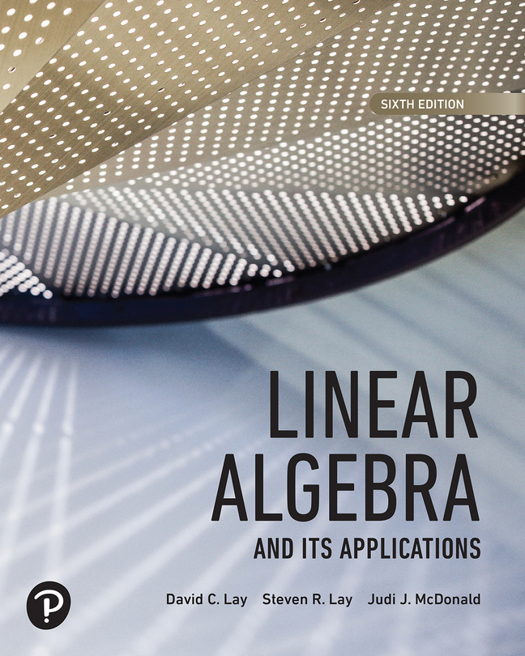

| Classes |
|---|
| Instructor |
|---|
| Text & Prerequisites |
|---|
|  |
by D. Lay, S. Lay and J. McDonald, Pearson Publishing, bundled with an access code to Pearson's MyLab. You can get the text with the access code or just the access code at the UConn Bookstore online, and they can send it to you if you are not on campus. The Prerequisite for this course is Calculus II, either Math 1132Q or Math 1152Q. Note: This course is a prerequisite for Math 3210, 3510 and 3710 and will soon be a prerequisite for Math 3230. |
| Goals |
|---|
The primary goal for the semester is to learn, understand, and be able to work with the vocabulary, algorithmic manipulations, main ideas, and concepts of linear algebra, specifically as outlined in Course Content. A very important secondary goal is to develop the ability to communicate mathematics and reason mathematically. This includes reading, understanding, and responding to mathematical arguments. You are probably familiar with having this mathematical dialogue with an instructor, but a goal of this course is to open and develop this kind of dialogue with your peers.
| Course Content and Extra Resources |
|---|
We will cover the following material from
Linear Algebra and Its Applications, 6th edition by D. Lay, S. Lay and J. McDonald, Pearson Publishing.
| Chapter | Chapter Title | |
| 1 | ||
| 2 | 2.1 - 2.3 | |
| 3 | ||
| 4 | ||
| 5 | ||
| 6 |
| Important Dates |
|---|
| Wednesday, January 19 | First Day of Class |
|---|---|
| Monday, February 7 | Quiz 1 |
| Monday, February 21 | Quiz 2 |
| Monday and Wednesday, February 28 and March 2 | Cross Products and Determinants Project |
| Monday, March 7 | Quiz 3 |
| Monday and Wednesday, March 21 and 23 | Primary Source Project |
| Monday, April 11 | Quiz 4 |
| Friday, April 29 | Last Day of Class |
| TBA Week of May 2 | Final Exam |
| Grades |
|---|
What are grades? What purpose do they serve? What do they mean? This blog post outlines some problems with grades. Below is how I suggest we calculate grades in this course. Please let me know if you have any suggestions or find this scheme over/under-emphasizes anything.
| Homework |
|---|
The homework assignments for the semester in Pearson's MyLab which you will access through HuskyCT. Due dates for homework assignments are given in the Course Schedule. As explained there, homework assignments must be submitted by 11:59 pm the day they are due.
It is natural and expected to struggle on homework. You are encouraged to work together and come to office hours for help with homework.
Homework is a place to learn how to do things!
You can also use the Q-Center as a place to get help. It is an awesome resource; the tutors there are paid to help you! You will want to check what times someone who is comfortable helping with linear algebra is available.
Two other, more big-picture resources are the Academic Achievement Center and the Keep Learning Site.
Finally, I have three hours a week that are specifically for helping y'all. Please come to my office hours with any questions! If you think a question is dumb or you think you "don't understand anything," then that is even more reason to come to my office hours. I am very used to struggling with math and I want to help everyone learn in this course.
Class attendance is not mandatory this semester, though it is highly encouraged. I know things are difficult for everyone right now and I know flexibility is appreciated, so I will not grade participation directly.
| Quizzes and Exams |
|---|
In this class we will have four quizzes and a final.
We have yet to be assigned a final exam time, but the plan is to use the first hour of our assigned final exam time.
The quizzes will last 20 minutes and be at the beginning of class sporadically throughout the semester.
After finishing the quiz you will use camscanner to upload the quiz to HuskyCT.
You will grade your own quiz after class based on a rubric that I will create.
(I reserve the right to overturn your grading decisions.)
After grading your quiz you may write corrections/reflections in order to receive up to one third credit back on the problems you missed.
(The above scheme was changed from last semester so that I have room to write less difficult quizzes.)
You will have one chance to make corrections.
Grading, Corrections, and Reflection Expectations: Your graded quiz with corrections and reflection is due within one week of the time of the quiz.
For example, Quiz 1 is on Monday the 7th and your graded quiz with your reflection and corrections will be due at the start of class on Monday the 14th.
Corrections that are not fully correct and explained will receive no points back.
The reflection should assess how you think you are doing in the class and whether the ways in which you are studying are effective.
If you are not satisfied with how you're doing, your reflection should explain how you will change your approach to improve your performance.
Here is a sample of how your finished graded and corrected quiz with reflections might look.
Make-Up Policy: In general, no make-ups for quizzes or the final exam will be given. If you are going to miss the exam or a quiz and can show proof of some officially acceptable reason, e.g.: a verifiably documented medical excuse or a conflicting official university sanctioned activity that cannot be rescheduled, then we can make arrangements.
| Synchronicity |
|---|
| Statement of Expectations |
|---|
This is an incredibly tough time for everyone, myself included. I understand everyone is dealing with things differently and I will do my best to be flexible and accomodating. I ask you to be open with me and to discuss issues with me when they come up. I will listen and do what I can to help you succeed in this course. Conversely, I am super excited to teach this course and I love this material. However, this is my first semester teaching in person at UConn. I ask that you be understanding of the mistakes I will certainly make, and I ask that you give me honest feedback about how I can improve.
As individuals and as a class we will be respectful of everyone; language or behavior that discriminates against anyone will not be tolerated. We will avoid stereotypes about who is "good" at math. Math is difficult, but also beautiful, and as a class we will work together to overcome difficulties and share the beauty. This is especially true with group work. You must treat your group members with respect and engage in positive and constructive conversations.
| Academic Integrity |
|---|
I expect you to be familiar with and abide by UConn's academic integrity policy at all times. There should be no help given or received on exams or quizzes, not from other people, not from tutors, not from online sites. Academic misconduct includes, but is not limited to, providing or receiving assistance in a manner not authorized by the instructor in the creation of work to be submitted for academic evaluation (e.g. papers, projects, examinations and assessments - whether online or in class); presenting, as one's own, the ideas, words or calculations of another for academic evaluation; doing unauthorized academic work for which another person will receive credit or be evaluated; using unauthorized aids in preparing work for evaluation (e.g. unauthorized formula sheets, unauthorized calculators, unauthorized programs or formulas loaded into your calculator, etc.); and presenting the same or substantially the same papers or projects in two or more courses without the explicit permission of the instructors involved. A student who knowingly assists another student in committing an act of academic misconduct shall be equally accountable for the violation, and shall be subject to the sanctions and other remedies as described in Appendix A of the Student Code. Sanctions shall include, but are not limited to, a letter sent to the Office of Community Standards of the University; a grade of 0 on the assignment, quiz or exam; a grade of F for the course.
| Support From Me |
|---|
I pledge to do my utmost as your instructor to support you and your success in this class. Regardless of your race, color, religion, sex, sexual orientation, gender identity or expression, age, disabilities, citizenship, or national origin, I am happy that you're taking this course and I am excited to help you learn math. I will do everything I can to make sure you feel welcome in our virtual classroom and address any aspects or elements of the course that may make you feel unwelcome. This runs the gamut from being willing to make accomodations for religious observances to making sure our classroom is a supportive place. Please come to me with any concerns you have! I'm here to listen and to help give you the tools and conditions to be successful in this course.
| Student Athletes |
|---|
If you are a student athlete, let me know soon. Speak with your CPIA counselor and talk with them about any dates that conflict with your participation in this course. I should know of these conflicts within the first two weeks of the course. Alternate arrangements for away game conflicts with quizzes/the final might be possible.
| Accessibility Issues |
|---|
If you have a learning or physical disability, the Center for Students with Disabilities (CSD), Center for Students with Disabilities at https://www.csd.uconn.edu and at phone: 860-486-2020 and video phone: 860-553-3243 (room 204 of the Wilbur Cross Building) should have contacted me with notification of your needed accommodations. As electronic communication does not always work as desired, please let me know of any issues you have and I can contact the CSD on your behalf.
In addition, if you have accessibility issues, I encourage you to discuss possible accommodations with me and consult the CSD, as this office can help determine appropriate accommodations for you.